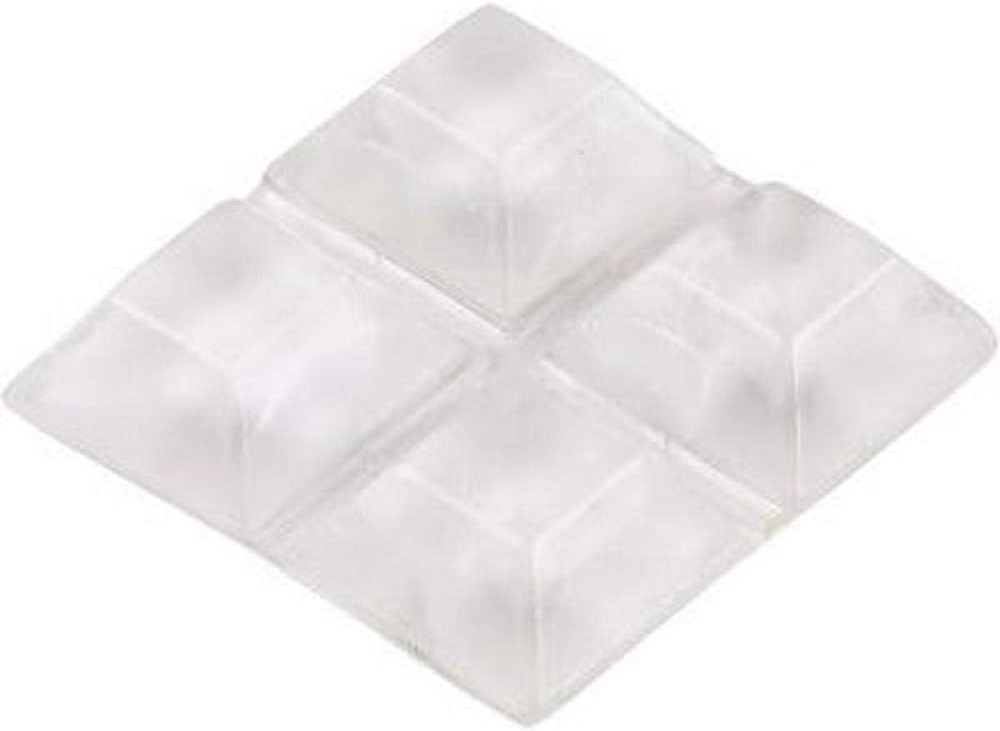

Best Angle Grinder for Beginners 2026
Our Top Picks
| Pick | Model | Price | Disc Size | Best For |
|---|---|---|---|---|
| 🏆 Best Overall | Makita 9557PB | $69 | 4-1/2" | First-time grinder buyers |
| 💰 Best Budget | WEN 944 | $29 | 4-1/2" | Occasional use, light work |
| 🔧 Best Cordless | DeWalt DCG413B | $119 | 4-1/2" | Portability, jobsite use |
Comparison Table
| Model | Price | Amp | RPM | Weight | Paddle Switch | Rating |
|---|---|---|---|---|---|---|
| Makita 9557PB | $69 | 7.5A | 11,000 | 4.5 lbs | ✅ | ★★★★★ |
| WEN 944 | $29 | 6.0A | 11,000 | 4.4 lbs | ❌ | ★★★★☆ |
| DeWalt DCG413B | $119 | 20V | 9,000 | 5.2 lbs | ✅ | ★★★★★ |
| Bosch 1375A | $49 | 6.0A | 11,000 | 4.2 lbs | ✅ | ★★★★☆ |
| Metabo HPT G12SR4 | $55 | 6.2A | 10,000 | 4.0 lbs | ✅ | ★★★★☆ |
Best Overall: Makita 9557PB

Makita 9557PB 4-1/2" Angle Grinder
7.5A · 11,000 RPM · 4.5 lbs · Paddle switch · 1-year warranty
Check price on Amazon →The Makita 9557PB has been the default recommendation for a first angle grinder for over a decade, and 2026 hasn't changed that. The 7.5-amp motor is smooth — no vibration at startup, no bogging under moderate load. The paddle switch is the safety feature that matters most: let go and the grinder stops. No lock-on to fight if the wheel grabs.
What we like
- Smooth motor — no vibration at startup, no bogging
- Paddle switch = dead man's switch. Drop it, it stops
- Labyrinth construction seals motor from metal dust
- Gear housing rotates 90° for cutting in tight spots
- Proven reliability — this model has been made for 15+ years
What we don't like
- No toolless guard adjustment (need a screwdriver)
- Side handle is plastic — usable but not great
- Corded only. No battery option for this model
Best Budget: WEN 944
At $29, the WEN 944 costs less than some grinding discs. It's not as refined as the Makita — the motor has a slight vibration, the switch is a slide-lock (less safe), and the build quality reflects the price. But if you need an angle grinder twice a year for cutting rebar or removing rust from a trailer hitch, it's the right tool for the right price. Just wear gloves and keep both hands on it.
Best Cordless: DeWalt DCG413B
The DeWalt DCG413B runs on the 20V MAX battery system. At 9,000 RPM it's slower than corded grinders, but the freedom from a cord is worth it when you're cutting fence posts 200 feet from an outlet. The brake stops the wheel in under 2 seconds — a feature usually found on $150+ grinders.
Safety Notes for First-Time Grinder Users
⚠️ An angle grinder is the most dangerous tool in a home workshop
It spins a thin disc at 11,000 RPM — the edge is moving at roughly 170 mph. If the disc shatters, the fragments are shrapnel. Always wear safety glasses AND a face shield. Never remove the guard. Never use a damaged disc. Keep the guard between your face and the wheel at all times.
Discs You Should Buy With Your Grinder
| Disc Type | Use | Recommendation | Price |
|---|---|---|---|
| Cutting wheel (0.045") | Cutting metal bar, pipe, sheet | DeWalt DW8061 | $9 (5-pack) |
| Grinding wheel (1/4") | Smoothing welds, shaping metal | Makita 741404-B | $7 |
| Flap disc (40-grit) | Rust removal, paint stripping | Benchmark Abrasives | $12 (5-pack) |
| Wire cup brush | Heavy rust, mill scale removal | DeWalt DW4904 | $11 |
| Diamond blade | Cutting concrete, brick, tile | DEWALT DW4701 | $18 |
The Bottom Line
Buy the Makita 9557PB. It's the sweet spot: smooth, safe, and built to last. If $69 is too much, the WEN 944 at $29 will cut and grind — just be careful with it. And seriously: wear a face shield.